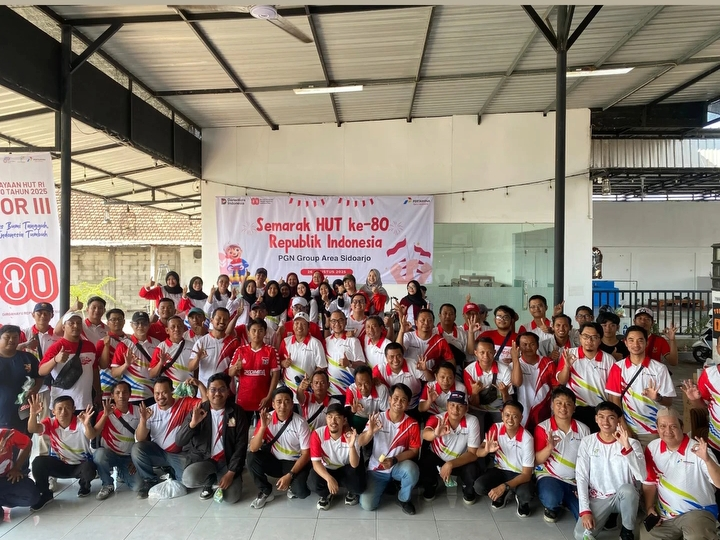

EXPERIENCE
Internship Activities

Safety Briefing at Offtake Kalisogo Sidoarjo
In July 2025, I attended a safety briefing at the Kalisogo Offtake Station, which discussed safety procedures in high-pressure areas and the use of PPE. Afterward, I studied the SOR III natural gas distribution pipeline network schematic, including the distribution flow from the offtake to industrial and residential customers. This activity deepened my understanding of the gas distribution system and the importance of occupational safety.

PGN Group Sidoarjo Area 2025 Celebration of the 80th Anniversary of the Republic of Indonesia at Raja Tunggal Fishing Village, Sidoarjo.
In August 2025, I participated in the PGN Group Sidoarjo Area's 80th Anniversary Celebration of the Republic of Indonesia at Raja Tunggal Fishing Sidoarjo.

Aerobic Exercise with PT. Perusahaan Gas Negara in the Sidoarjo Area
In September 2025, I participated in an aerobics class with PT. Perusahaan Gas Negara Sidoarjo Area.

Final Internship Presentation at PT Perusahaan Gas Negara Area Sidoarjo
In October 2025, I gave my final internship presentation at PT Perusahaan Gas Negara Sidoarjo Area.